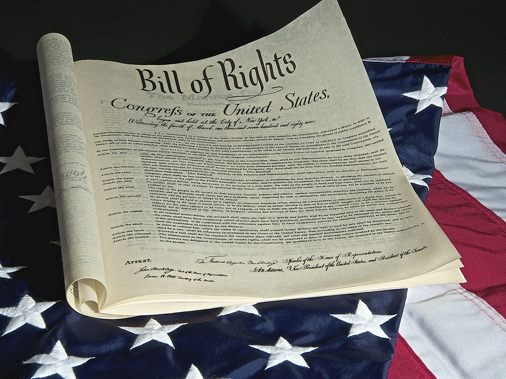

The Bill of Rights

As mentioned earlier, many of the delegates to the Constitutional Convention were extremely concerned with adding power to the central federal government. What would protect Americans’ individual liberties in the face of increased governmental power? With the oppressive British government fresh in their memory, many Founding Fathers didn’t want to see a repeat of unaccountable government. In order to get those that hesitated on board with the new plan, the Bill of Rights—the first 10 Amendments to the Constitution—was added as part of the negotiations.
Many of the rights well-known in the United States today, such as free speech, the right to a trial by jury, and the right to bear arms, are the result of this compromise. In many ways, the Bill of Rights (and the Constitution itself) reflects a desire for limited government—that is, a government that can only do what’s reflected in the founding document, the Constitution. Beyond this, the government should be checked in its pursuit of power over individuals. The Bill of Rights was ratified in December of 1791.
The Bill of Rights is summarized here:
|
Amendment 1 |
Freedom of Religion, Speech, and the Press |
|
Amendment 2 |
The Right to Bear Arms |
|
Amendment 3 |
The Housing of Soldiers |
| Amendment 4 |
Protection from Unreasonable Searches and Seizures |
| Amendment 5 |
Protection of Rights to Life, Liberty, and Property |
| Amendment 6 |
Rights of Accused Persons in Criminal Cases |
| Amendment 7 |
Rights in Civil Cases |
| Amendment 8 |
Excessive Bail, Fines, and Punishments Forbidden |
| Amendment 9 |
Other Rights Kept by the People |
| Amendment 10 |
Undelegated Powers Kept by the States and the People |
The full text of the Constitution is available for you to view in your textbook:
Now that you have finished your readings, revisit the Critical Thinking Zone at the end of the chapter in your textbook. Read and study the key terms. Then, complete the critical thinking questions and check your answers using your study material. You don’t need to submit your answers to the school. These questions won’t be graded.